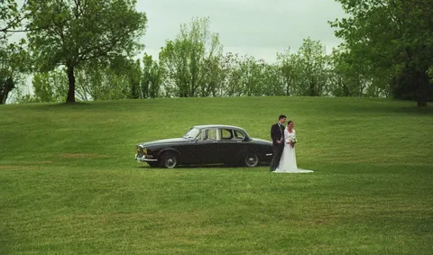
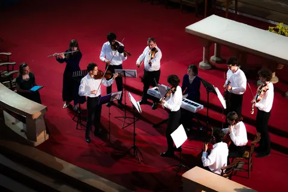

À propos
Je m’appelle Thomas.
J’ai 22 ans, je suis né à Castres et je suis en deuxième année de BTS Photographie à l’ETPA, à Toulouse.
J’ai commencé la photo pendant trois semaines de marche en Italie, avec un appareil acheté juste avant de partir. Avant ça, j’avais fait un an d’IUT à Rouen, l’école 42 à Perpignan, puis un service civique dans une école.
Je photographie ce que je connais. Le rugby, parce qu’à Castres on grandit avec le CO. La musique, après dix ans de chant choral et trois ans de cor d’harmonie. Et je commence les mariages.
Je travaille en numérique et en argentique.
Thomas Soleil
Contact